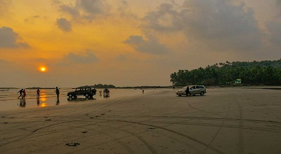
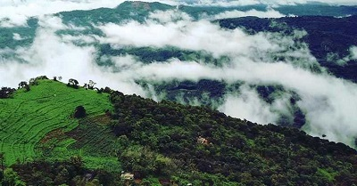

Muzzhapilangad Drive-in Beach
The Muzzhapilangad Drive-in Beach at Kannur is one referred to with many superlatives- as the longest drive-in beach in the whole of India, as one of the cleanest beaches of Kannur and most importantly, as one of the best drive-in beaches that the entire Asian continent has to offer!
Being Kerala's only drive-in beach, it attracts the attention of many tourists around the year. The whole concept of drive-in beaches is that you can drive right on the sandy shores of the beach- it is not very often that you get to drive along a 4 km long shoreline that offers an open road with no traffic and a stunning view.
Treat the adrenaline junkie in you and go out for some paragliding, parasailing, powerboating and many other water sports. The Muzzhapilangad Drive-In Beach is the perfect weekend getaway to blow off some steam and spend quality time with your loved ones.

Palakayyam Thattu
Tucked away in the verdant greenery of the Western Ghats and soaring at a dizzying altitude of 3500 feet above sea level, Palakayyam Thattu is one of the most beautiful hill stations in the entire state of Kerala. Adorned with luxuriously dense greenery, sky-touching trees and majestic hillocks, the view that Palakayyam Thattu enjoys is one that you will rarely find. Owing to its considerable altitude, this hill station is often visited by low hanging clouds that render the entire atmosphere misty and fresh!
The magnificent view of this hillock has made it one of the most popular trekking destinations in the south. Sipping on a cup of tea as you overlook the lavish foliage from the top is truly an experience that you will cherish forever. The entire climb up to Palakayyam Thattu is one that is cradled in the serene laps of nature- tranquil, and untouched by the worries of the world. Visiting this gorgeous hill station and basking in its remarkable view with your loved ones would be a perfect way to escape the monotony of our fast-paced city lives and indulge in some excitement and enjoyment.